|
- GLI ERRORI TRAMANDATI -
|
|
Talvolta abbiamo osservato che alcuni autori di prestigiose pubblicazioni, sono caduti in errore, vuoi per
non aver verificato le notizie oppure semplicemente per aver voluto seguire una tradizione orale, senza tuttavia
effettuarne i dovuti riscontri. Abbiamo così rischiato di far assurgere a verità episodi frutto di pura fantasia.
- Per alcuni, la soppressione di Gallo, Leone, Orso, Quercia, Spadaforte e Vipera sarebbe stata conseguente ad un Palio corso nel 1675 conteso tra la Lupa e la Spadaforte. L'assegnazione della vittoria alla Lupa avrebbe scatenato la reazione della Spadaforte che, spalleggiata dai popolani delle altre cinque contrade, avrebbe dato origine a tumulti, tali da giustificarne la cancellazione immediata dal panorama paliesco. In realtà, nel 1675, le sei contrade soppresse erano già inattive da tempo ed i loro territori erano stati assorbiti, più o meno tacitamente, dalle consorelle confinanti. E' pressochè certo che nel 1675 non sia stato corso alcun Palio: tesi sposata finanche dalla Contrada della Lupa che non inserisce nel proprio “albo d’oro” questa misteriosa vittoria.  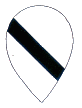 
   - Il Palio attribuito al Leocorno nel 1664 non venne sicuramente corso il 1° giugno, fa fede un bando redatto il giorno successivo riferito a quella Carriera.  - Tutti le pubblicazioni riportano che il Valdimontone vinse il Palio del 2 luglio 1705 con Giuseppe Galardi, detto Pelliccino e quello del 2 luglio 1706 con Giovan Battista Pistoj, detto Cappellaro. Un ricevuta del pagamento effettuato dalla contrada a favore del vetturino Pelliccia, ci informa invece che egli vinse nel 1706 e di conseguenza Cappellaro nel 1705. 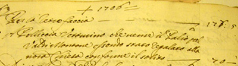 - Su Pelliccino, come per altri fantini che vissero a cavallo dei Secoli XVII e XVIII, sono state scritte tante inesattezze. Adesso, confortati da documenti inoppugnabili, si può asserire che l'identità di Pelliccino (o Pelliccia) fosse quella di Giuseppe Galardi e non quella di Eligio Volpi, personaggio del quale non abbiamo avuto alcun riscontro della sua esistenza in vita. 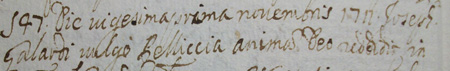
- Ancora Giovan Battista Pistoj, detto Cappellaro è vittima di un altro clamoroso errore. A lui vengono attribuite due vittorie (1732 nel Valdimontone e 1733 nella Tartuca)
a scapito di suo figlio Giuseppe. A prescindere che nel 1733 Cappellaro era morto da un anno, a fugare ogni dubbio residuo, nella Contrada della Tartuca è archiviata la ricevuta della mercede di 70 Lire elargite al fantino per la vittoria conseguita. 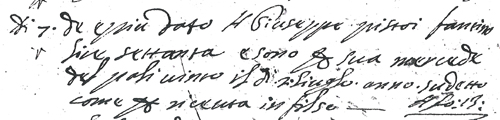 Archivio Contrada della Tartuca
- Il soprannome del fantino che fece cappotto nel 1713 era Ruglia e non Roglia; si chiamava Giovan Battista Papi, nome che è sempre stato invece attribuito a
Ignudo che invece si chiamava Niccolaio Luti ed era originario di Prata.  - In un registro di battesimo di Figline Valdarno, è apparso che il cognome di Pilontra era Tinagli e non Tinalli; così come da un attestato di stato libero rilasciato dalla Curia Vescovile di Arezzo il 20 ottobre 1727, è emerso che Pettinajo non si chiamava Crognolini, bensì Corgnolini. 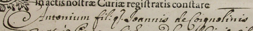
- Il Mazzini che vinse i Palii del luglio 1734 e 1735, non si chiamava Antonio, bensì Giuseppe: Lo si constata nella ricevuta del pagamento che la Contrada della Tartuca
emise in suo favore. 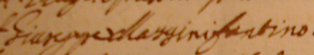
- A Siena il cognome di Folaghino che terminò la sua carriera di fantino da vittorioso, venne storpiato in Guaschi, ma in realtà era GUASQUI.

- Il cognome del celeberrimo Paolaccino non era Locchi, bensì Rocchi e dal suo secondo nome di battesimo derivò il suo soprannome.
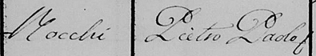
- Sorba Maggiore e Sorba Minore sono dei soprannomi inesatti: Giovan Battista Bianciardi si chiamava semplicemente Sorba
e suo fratello Santi, Sorbino. - Pesce è indicato come un fantino che avrebbe avuto una carriera lunghissima, iniziando a correre nel 1793 per terminare nel 1842. In realtà si trattava di due fantini, padre e figlio, Giovanni e Pasquale, entrambi con lo stesso soprannome. - Luigi Felloni non è mai esistito. Il famoso Biggéri, dieci volte vittorioso e che terminò la sua carriera perchè morì pochi giorni prima del Palio di luglio 1810, si chiamava Tommaso.  - Piaccina (Luigi Menghetti), che ripetutamente viene indicato come il fantino che vinse il suo ultimo Palio alla veneranda età di 72 anni, in realtà di anni ne aveva 64, poichè nacque ad Empoli nel 1762. 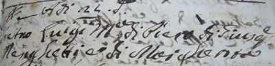 - Anche Bernardino Poggi, detto Romeo, non aveva 15 anni quando vinse il suo primo ed unico Palio. Aveva 19 anni e 10 mesi. - La didascalia che compare in una foto di Francesco Santini, detto Gobbo Saragiolo, reca l'età del medesimo, se pur di poco, errata: non aveva infatti 14 anni e 3 mesi, ma 13 anni e 8 mesi, essendo nato il 14 dicembre 1809. 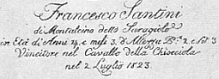 - Il Palio di luglio del 1844 fu vinto dal Nicchio con Pietro Tarquini, detto Bicchierino, un garzone originario di Montepulciano. Alcune cronache riportano la notizia della morte del giovanissimo fantino, nei giorni seguenti alla carriera vittoriosa, a causa delle ferite provocate dalle tante nerbate ricevute in corsa che avrebbero contribuito ad aggravare una precedente patologia. In realtà Bicchierino, non morì affatto dopo quella vittoria e corse in piazza altre sette volte fino all’agosto 1850 e neppure la dinamica della corsa giustificherebbe la tesi della morte, infatti, dopo essere caduto al canape, Bicchierino rimontò ricevendo contrasto solo dal Figlio di Bonino che si piazzò secondo nell’Onda. 
- Il 4 luglio 1858, il fervore risorgimentale scatenò la fantasia dei cronisti. Venne annotato che l’Oca, assai amata dalla cittadinanza per i suoi colori patriottici, vinse il Palio grazie all’aiuto della storica rivale Torre, che per amor di Patria, avrebbe ostacolato la Tartuca (a sua volta odiata per il giubbetto che ricordava il dominatore austriaco), altrimenti destinata a vincere incontrastata. Di tutto questo, di vero c’è soltanto che vinse l’Oca, poichè basterebbe leggere l'elenco delle contrade partecipanti a quella carriera per notare che la Tartuca non era neppure fra le dieci presenti in Piazza. - Ma errori venivano commessi anche da Pubblici Ufficiali: così si esprimeva nel 1795 il Gistri Mugnaio in un'aula del Tribunale di Siena: "...mi chiamo Antonio del fu Agostino Morandi, e NON GISTRI, come ho udito dal precetto che ho avuto, perchè Gistri è il mio soprannome, sono Garzone del Mugnaio Giuseppe Brecchi al Mulino della Pieve al Bozzone, sono nativo della Cura di Tressa, fuori Porta Fontebranda, ho moglie, senza figli, di anni 22 in 23...". - Tornano alla mente pure dei cognomi storpiati: il fantino che corse il 2 luglio del 1911 nel Leocorno si chiamava Carosi, e non Carusi o Garosi come invece è solito apparire. Lo stesso dicasi per Strega, al secolo Giuseppe Maria Bartaletti e non Bortoletti, nonchè per Maremmanino il cui cognome era Giraldini e non Gilardini.  - Riguardo alle provenienze, colpisce un dipinto conservato nella Società il Rostro della contrada dell'Aquila inerente alla vittoria del 1815, dove la didascalia recita che Ciccina fosse originario di Livorno. Sappiamo invece che la famiglia Bini era originaria di Empoli e che lo stesso fantino vi nacque il 17 febbraio 1776. 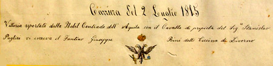 - Lo Stralanchi che viene considerato pisano, nacque invece poco fuori Porta Romana, nel territorio della Certosa di Maggiano il 6 aprile 1830. - Mastuchino al secolo Alfredo Forni, molto spesso ritratto in foto o dipinti con i costumi dell'Aquila in veste di Alfiere e pertanto creduto dai più un "Aquilino" purosangue, in realtà nacque e abitò in Salicotto, nel territorio della Torre. A lui viene pure erroneamente riconosciuta la paternità dell'invenzione del salto del fiocco. Anche in questo caso, come ci suggerisce Odoardo Piscini, il cosidetto "salto" della bandiera era stato già contemplato negli antichi trattati seicenteschi sull'argomento. Poichè non è pensabile che il Forni conoscesse tali scritti, è probabile che la notizia gli fosse pervenuta per trasmissione orale: egli ha comunque il merito di averci messo la sperimentazione e il metodo risolutivo. 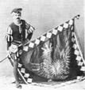 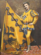 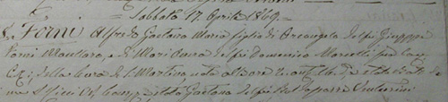 - A trarre in inganno sulla provenienza di Giovanni Vieri, detto Peggio, è stato il padre che lavorava alle Saline di Volterra; conseguentemente è stato sempre dato per scontato che il figlio fosse nativo del volterrano. Dai giornali di inizio Novecento, si apprende invece che Peggio era di Portoferraio e una successiva verifica ha confermato che vi nacque il 24 febbraio 1848. - Non esiste nessun serio riscontro atto a suffragare che quando corrono in Piazza le quatto verdi, (Bruco, Drago, Oca e Selva) accadano fatti drammatici. Scorrendo le cronache delle 51 Carriere dove tutte le quattro Contrade sono state presenti, emerge che eccetto che per l'episodio dell'accoltellamento di Bubbolo per il Palio del 16 agosto 1919, i fatti verificatisi prima, durante e dopo le altre rispettive carriere, sono riconducibili alle normali vicessitudini che hanno da sempre caratterizzato la festa. A rinfocolare questa diceria, l'incidente occorso ad un ospite francese, rimasto ucciso per essere stato colpito da un pezzo di pietra serena staccatosi dal balcone del palazzo che ospita la Banca Toscana, durante la cena della Prova Generale della Civetta dell'agosto 2010. (LEGGI LA CRONACA) Un'altra svista clamorosa avvenne nel 1986, quando il Comune decise di dedicare il Palio del 2 luglio al 7° Centenario della morte del Beato Ambrogio Sansedoni. In realtà l'anniversario non cadeva in quell'anno, ma l'anno seguente. Qualcuno evidentemente fu tratto in inganno dall'uso del Calendario Senese che fino al 1749 faceva principiare il nuovo anno il 25 marzo e non il 1° gennaio. Confrontandolo con il nostro, corrispondeva solo dal 25 marzo al 31 dicembre e quindi per fare il computo esatto degli anni bisogna sempre sottrarne uno. Pertanto, il Sansedoni morì il 20 marzo 1287 e non nel 1286. |